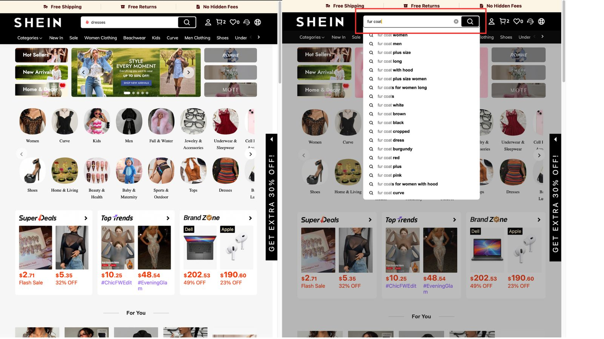
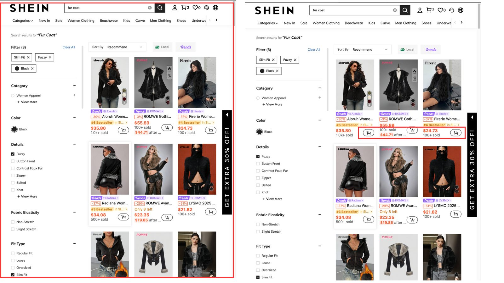
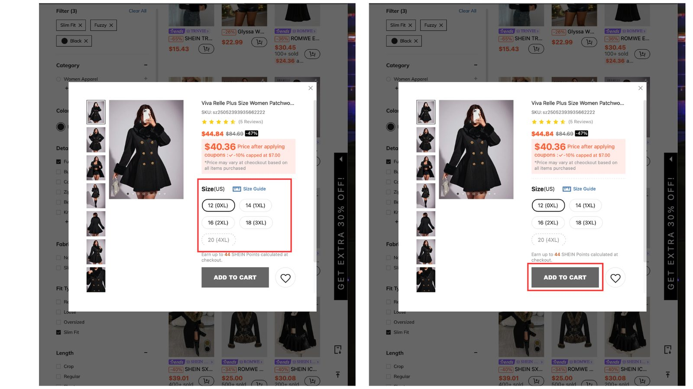
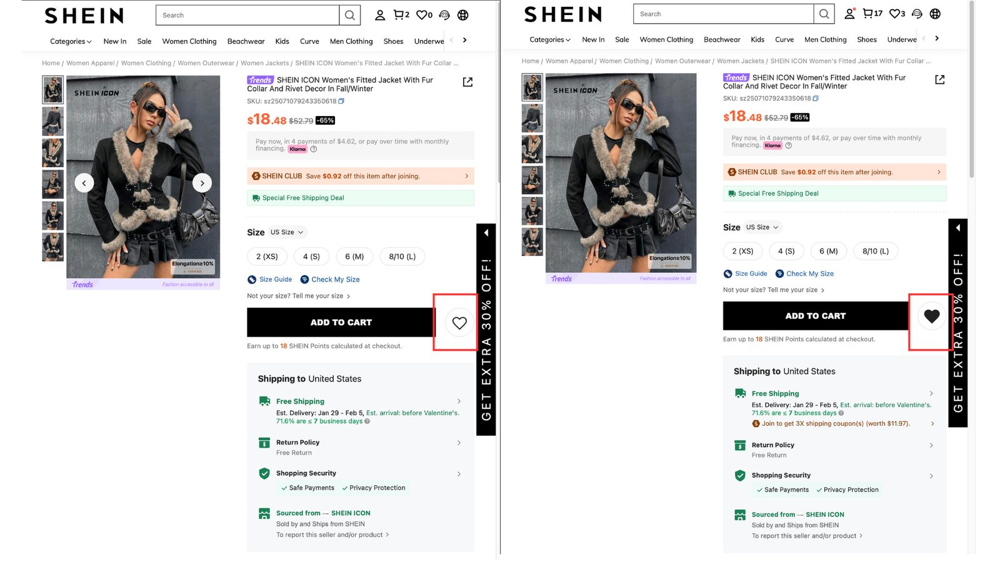

Case study · Cognitive walkthrough
Shein
Six hundred thousand products, a homepage that never stops moving, and a storefront built to keep you scrolling. I walked three ordinary shopping tasks step by step as a first-time user, asked four questions at every step, and then went back a second time because passing everything on the first pass is not a result.
- My role
- Solo, start to finish
- Course
- HCI 460
- Method
- Individual cognitive walkthrough, Lewis & Rieman’s four questions
- Scope
- 3 tasks, 16 action steps, desktop web
The site
Shein sells fast fashion globally on desktop and mobile to tweens, teens and people in their twenties. It carries over 600,000 products, and the interface is built accordingly: pop-ups, banners, badges and rotating promotions, all of it working to keep you moving through the catalog.
That density is a deliberate commercial choice, not an accident, which makes it interesting to evaluate. The question is not whether the site is cluttered. It obviously is. The question is whether a first-time shopper can still complete an ordinary task inside the clutter, and where exactly the noise starts costing them.
The method
A cognitive walkthrough simulates a new user. You define the task, write out the happy path, then step through it one action at a time asking Lewis and Rieman’s four questions of every step:
- Will the user be trying to produce the effect this action has?
- Will they see the control for it?
- Once they find it, will they recognize it produces the effect they want?
- After acting, will they understand the feedback well enough to move on with confidence?
A step only passes if the answer is yes four times. Anything short of that is a place a new user can fall out of the flow. Problems get rated on the standard severity scale:
Severity scale
0 not a usability problem · 1 cosmetic only · 2 minor usability problem · 3 major usability problem · 4 usability catastrophe
The three tasks
Three things a new shopper does in their first visit, each with the happy path written out before I touched the site, so I was measuring the interface rather than my own memory of it.
Task 1 · Find a fur coat
- Start at the homepage
- Find the search bar
- Type “fur coat” and submit
- View results
- Apply length, color and detail filters
- Open a coat
Task 2 · Quick add to cart
- Reach a product listing page
- Spot the quick add icon
- Select it
- Choose color, size, quantity
- Item lands in the cart
Task 3 · Save to wishlist
- Reach a product listing page
- Open a product
- Select the heart icon
- Read the feedback





First pass: everything passed
All sixteen action steps cleared all four questions. Search was where people expect it, the filters applied instantly, the quick add icon sat on every product tile, and the heart changed color when I saved something. On paper, three clean tasks.
Which is a problem
A walkthrough that finds nothing has usually asked the wrong question. I had evaluated whether the happy path works, and it does. I had not evaluated what it costs to stay on it. So I went back through my own screenshots looking for the places where I had quietly done extra work and not counted it.
Second pass: three problems
Same screens, same tasks, this time rating what I found rather than only asking whether the step could be completed.
-
The price is shown four different ways at once
Severity 3, major usability problem. One product carries a list price, a struck-through price, a percentage off, a lower “price after applying coupons”, and a line reading price may vary at checkout based on all items purchased. The single question the page exists to answer is what this costs, and after reading all of it I still could not say. Every step passed, and I still could not answer the question.
-
Product names truncate mid-word in the grid
Severity 2, minor usability problem. Tiles read “Aloruh Wome…”, “ROMWE Gothi…”, “#6 Bestseller in Sl…”. The badges get the space and the product name loses it, so the grid cannot be scanned. Every comparison costs an extra click, on a results page built for browsing.
-
Sold-out sizes are marked by a dashed outline and nothing else
Severity 2, minor usability problem. In the quick add dialog, size 20 (4XL) is drawn with a dashed border while the others are solid. No label, no “out of stock” text, nothing a screen reader would announce. Anyone not picking up that border treatment gets no signal at all, and the largest size in the range is the one carrying it.
The interface never blocked me. It just made me pay attention to the wrong things, and I only noticed on the second pass.
Study notesWhat was genuinely good
Worth saying, because a critique that only finds faults is not an evaluation either. The applied-filter chips are excellent: each one is named, each one has its own remove control, and Clear All sits right beside them, so the state of the search is always readable. The heart icon fills in on save, which is unmistakable feedback. Search autocomplete does real work, offering “fur coat plus size”, “fur coat long”, “fur coat with hood” before you finish typing.
Looking back
The method did exactly what it says on the tin and no more. Lewis and Rieman’s four questions test whether a step can be completed. They do not ask what the step costs, how much noise was waded through, or whether the user finished the task and still could not answer the question they came with.
Next time I would run the walkthrough as written, then add a fifth question of my own at every step: what did this step ask of the user that it did not have to? That is where all three findings above came from, and none of them showed up in the first pass.
I would also pair the walkthrough with two or three real sessions. A walkthrough is me predicting a first-time user, and I have now looked at this site for hours, which makes me the worst possible stand-in for one.